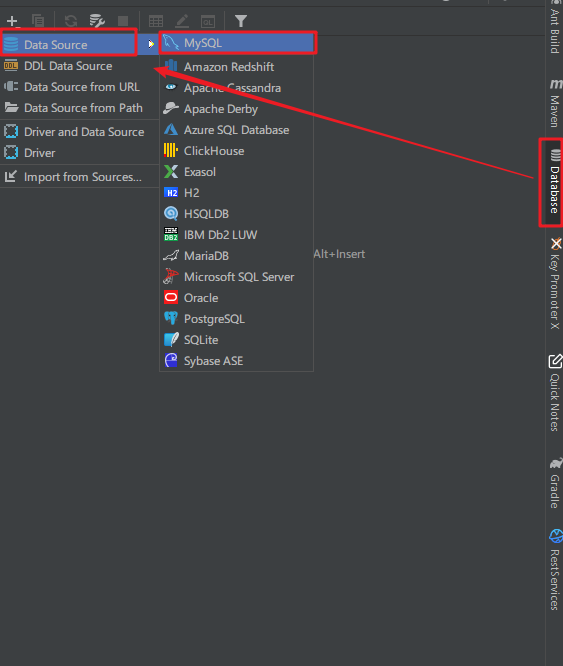
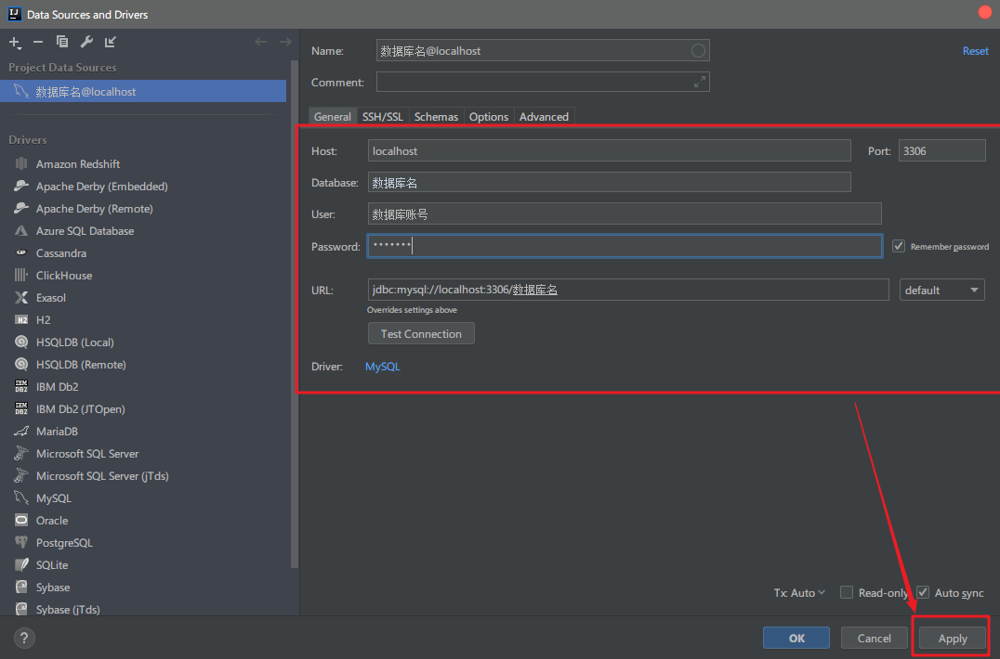

已经到了2019年春节, 可以闲下来写写博客咯。博主自上大学以来,项目开发经验积累了不少。期间, 我也学会了一些”邪门歪道”, 比如, 开发过程使用了Intellij Idea中的插件Easy Code, 发现能大大简化了后端开发, 将开发效率地提高到十分钟就能完成后端的基本功能实现, 真是太棒了! 再也不需要重复地干无趣的活儿了!
介绍 下面开始介绍今天的主角 EasyCode 吧
English:
The code generation plug-in based on IntelliJ IDEA is developed to support custom - templates (Java, HTML, JS, XML).
As long as database related code can be generated through custom templates. Support database type and Java type mapping relationship configuration.
The code that supports generating multiple tables at the same time. Each table has a separate configuration information. Full personalization definition, the rules are set by you.
中文：
基于IntelliJ IDEA开发的代码生成插件，支持自定义任意模板（Java，html，js，xml）。
只要是与数据库相关的代码都可以通过自定义模板来生成。支持数据库类型与java类型映射关系配置。
支持同时生成生成多张表的代码。每张表有独立的配置信息。完全的个性化定义，规则由你设置。
安装
在IDEA中打开Settings -> Plugins
搜索 Easy Code
点击 Install 安装
安装完成后,重启IDEA
快速使用 连接数据库


提前安装和建立好数据库,填写好数据库必要信息(数据库地址,数据库名,数据库账号,密码)
代码生成使用
选择Config Table
检查或修改 数据库字段类型与属性类型映射对应关系
选择 Generate Code
选择好Module , Package, Path,Template代码
点击ok,发现项目已经生成了代码
相关配置 选择Settings -> Other Settings-> Easy Code
全局配置 修改数据库表前缀
映射配置 添加longtext类型的映射
代码模板配置
自定义代码配置 Easy Code 提供了自定义模板的功能,这一点非常方便后台的开发,也是本博主最看重这个插件的地方。Mybatis,而是使用springboot结合spring-data-jpa开发,这个时候,原来提供的模板是难以派上用场,此时,我们就需要自己写出代码模板,怎么写呢?Velocity模板引擎的知识
Velocity是一个基于java的模板引擎（template engine）。它允许任何人仅仅简单的使用模板语言（template language）来引用由java代码定义的对象。
如果没有这方面的学习,也没关系http://www.shujuhaiyang.com
下面是博主修改的一些代码模板,是为了使用springboot结合spring-data-jpa开发而编写的,希望看了对你有帮助
repository(jpa).java 1 2 3 4 5 6 7 8 9 10 11 12 13 14 15 16 17 18 19 20 21 22 23 24 25 26 27 28 29 30 31 ##引入宏定义 $!define ##使用宏定义设置回调（保存位置与文件后缀） #save("/entity", ".java") ##使用宏定义设置包后缀 #setPackageSuffix("entity") ##使用全局变量实现默认包导入 $!autoImport import java.io.Serializable;##使用宏定义实现类注释信息 #tableComment("实体类") public class $! { private static final long serialVersionUID = $!tool.serial(); #foreach($column in $tableInfo.fullColumn) #if(${column.comment})//${column.comment}#end private $!{tool.getClsNameByFullName($column.type)} $!{column.name}; #end #foreach($column in $tableInfo.fullColumn) ##使用宏定义实现get,set方法 #getSetMethod($column) #end }
repository(jpa+data-rest).java 1 2 3 4 5 6 7 8 9 10 11 12 13 14 15 16 17 18 19 20 21 22 23 24 25 26 27 28 29 30 31 ##定义初始变量 #set($tableName = $tool.append($tableInfo.name, "Repository")) ##设置回调 $!callback.setFileName($tool.append($tableName, ".java" )) $!callback.setSavePath($tool.append($tableInfo.savePath, "/repository" )) ##拿到主键 #if(!$tableInfo.pkColumn.isEmpty()) #set($pk = $tableInfo.pkColumn.get(0)) #end #if($tableInfo.savePackageName)package $!{tableInfo.savePackageName}.#{end}repository; import $!{tableInfo.savePackageName}.entity.$!{tableInfo.name}; import java.util.List; import org.springframework.data.jpa.repository.JpaRepository; import org.springframework.data.jpa.repository.JpaSpecificationExecutor; import org.springframework.stereotype.Repository; import org.springframework.data.rest.core.annotation.RepositoryRestResource; @RepositoryRestResource (path="$!tool.firstLowerCase($!{tableInfo.name})" )@Repository public interface $! }
service(jpa).java 1 2 3 4 5 6 7 8 9 10 11 12 13 14 15 16 17 18 19 20 21 22 23 24 25 26 27 28 29 30 31 32 33 34 35 36 37 38 39 40 41 42 43 44 45 46 47 48 49 50 51 52 53 54 55 56 57 58 59 60 61 62 63 64 65 66 67 68 69 70 71 72 73 74 75 76 ##定义初始变量 #set($tableName = $tool.append($tableInfo.name, "Service")) ##设置回调 $!callback.setFileName($tool.append($tableName, ".java" )) $!callback.setSavePath($tool.append($tableInfo.savePath, "/service" )) ##拿到主键 #if(!$tableInfo.pkColumn.isEmpty()) #set($pk = $tableInfo.pkColumn.get(0)) #end #if($tableInfo.savePackageName)package $!{tableInfo.savePackageName}.#{end}service; import $!{tableInfo.savePackageName}.entity.$!{tableInfo.name}; import org.springframework.data.domain.Example; import org.springframework.data.domain.Page; import org.springframework.data.domain.Pageable; import java.util.List; public interface $! $!{tableInfo.name} queryById($!pk.shortType $!pk.name); Page<$!{tableInfo.name}> queryAllByLimit(int offset, int limit); Page<$!{tableInfo.name}> queryAllByLimit(Pageable pageable); List<$!{tableInfo.name}> queryAllByExample(Example<$!{tableInfo.name}> example); Page<$!{tableInfo.name}> queryAllByExampleAndLimit(Example<$!{tableInfo.name}> example, Pageable pageable); $!{tableInfo.name} insert($!{tableInfo.name} $!tool.firstLowerCase($!{tableInfo.name})); $!{tableInfo.name} update($!{tableInfo.name} $!tool.firstLowerCase($!{tableInfo.name})); boolean deleteById ($!pk.shortType $!pk.name) }
serviceimpl(jpa).java 1 2 3 4 5 6 7 8 9 10 11 12 13 14 15 16 17 18 19 20 21 22 23 24 25 26 27 28 29 30 31 32 33 34 35 36 37 38 39 40 41 42 43 44 45 46 47 48 49 50 51 52 53 54 55 56 57 58 59 60 61 62 63 64 65 66 67 68 69 70 71 72 73 74 75 76 77 78 79 80 81 82 83 84 85 86 87 88 89 90 91 92 93 94 95 96 97 98 99 100 101 102 103 104 105 106 107 108 109 110 111 112 113 114 115 116 117 118 119 120 121 122 123 124 125 126 127 128 129 130 131 132 ##定义初始变量 #set($tableName = $tool.append($tableInfo.name, "ServiceImpl")) ##设置回调 $!callback.setFileName($tool.append($tableName, ".java" )) $!callback.setSavePath($tool.append($tableInfo.savePath, "/service/impl" )) ##拿到主键 #if(!$tableInfo.pkColumn.isEmpty()) #set($pk = $tableInfo.pkColumn.get(0)) #end #if($tableInfo.savePackageName)package $!{tableInfo.savePackageName}.#{end}service.impl; import $!{tableInfo.savePackageName}.entity.$!{tableInfo.name}; import $!{tableInfo.savePackageName}.repository.$!{tableInfo.name}Repository; import $!{tableInfo.savePackageName}.service.$!{tableInfo.name}Service; import org.springframework.data.domain.Example; import org.springframework.data.domain.Page; import org.springframework.data.domain.PageRequest; import org.springframework.data.domain.Pageable; import org.springframework.stereotype.Service; import javax.transaction.Transactional; import javax.annotation.Resource; import java.util.List; @Service ("$!tool.firstLowerCase($!{tableInfo.name})Service" )@Transactional public class $!@Resource private $!{tableInfo.name}Repository $!tool.firstLowerCase($!{tableInfo.name})Repository;@Override public $!{tableInfo.name} queryById($!pk.shortType $!pk.name) { $!{tableInfo.name} $!tool.firstLowerCase($!{tableInfo.name}) =null ; try { $!tool.firstLowerCase($!{tableInfo.name}) = $!tool.firstLowerCase($!{tableInfo.name})Repository .findById($!pk.name).get(); } catch (Exception e) { return null ; } return $!tool.firstLowerCase($!{tableInfo.name}); } @Override public Page<$!{tableInfo.name}> queryAllByLimit(int offset, int limit) { Pageable pageable = PageRequest.of(offset, limit); return $!tool.firstLowerCase($!{tableInfo.name})Repository .findAll(pageable); } @Override public Page<$!{tableInfo.name}> queryAllByLimit(Pageable pageable) { return $!tool.firstLowerCase($!{tableInfo.name})Repository .findAll(pageable); } @Override public List<$!{tableInfo.name}> queryAllByExample(Example<$!{tableInfo.name}> example) { return $!tool.firstLowerCase($!{tableInfo.name})Repository .findAll(example); } @Override public Page<$!{tableInfo.name}> queryAllByExampleAndLimit(Example<$!{tableInfo.name}> example, Pageable pageable) { return $!tool.firstLowerCase($!{tableInfo.name})Repository .findAll(example,pageable); } @Override public $!{tableInfo.name} insert($!{tableInfo.name} $!tool.firstLowerCase($!{tableInfo.name})) { return $!tool.firstLowerCase($!{tableInfo.name})Repository .save($!tool.firstLowerCase($!{tableInfo.name})); } @Override public $!{tableInfo.name} update($!{tableInfo.name} $!tool.firstLowerCase($!{tableInfo.name})) { return $!tool.firstLowerCase($!{tableInfo.name})Repository .save($!tool.firstLowerCase($!{tableInfo.name})); } @Override public boolean deleteById ($!pk.shortType $!pk.name) try { $!tool.firstLowerCase($!{tableInfo.name})Repository .deleteById($!pk.name); } catch (Exception e) { return false ; } return true ; } }
webController(jpa).java 1 2 3 4 5 6 7 8 9 10 11 12 13 14 15 16 17 18 19 20 21 22 23 24 25 26 27 28 29 30 31 32 33 34 35 36 37 38 39 40 41 42 43 44 45 ##定义初始变量 #set($tableName = $tool.append($tableInfo.name, "Controller")) ##设置回调 $!callback.setFileName($tool.append($tableName, ".java" )) $!callback.setSavePath($tool.append($tableInfo.savePath, "/web" )) ##拿到主键 #if(!$tableInfo.pkColumn.isEmpty()) #set($pk = $tableInfo.pkColumn.get(0)) #end #if($tableInfo.savePackageName)package $!{tableInfo.savePackageName}.#{end}web; import $!{tableInfo.savePackageName}.entity.$!{tableInfo.name}; import $!{tableInfo.savePackageName}.service.$!{tableInfo.name}Service; import org.springframework.web.bind.annotation.*; import javax.annotation.Resource; @RestController @RequestMapping ("$!tool.firstLowerCase($tableInfo.name)" )public class $!@Resource private $!{tableInfo.name}Service $!tool.firstLowerCase($tableInfo.name)Service;@GetMapping ("getOne?{id}" )public $!{tableInfo.name} getOne(@PathVariable $!pk.shortType id) { return this .$!{tool.firstLowerCase($tableInfo.name)}Service.queryById(id); } }
添加代码模板,将上面的代码一一复制粘贴即可
添加后,当选择 Generate Code,可以看到你所添加的代码模板
导出模板
导入模板
结语 新的一年,岁月不居,时节如流。虽然我们又老了一岁,但博主年轻的心态还未逝去。凭借年轻积极的心态,博主充满着激情去干每一件事,哪怕今天是大年初一,我对编程的热爱仍然放不下。而年轻的时光往往都是宝贵的,我不想浪费于假开心的玩乐,也不要花时间做太多的无用功做一些没有太大收获的事。EasyCode很适合处于当前的我,一键生成代码大大提高了开发效率,让我有了更充分的时间去完成其他的事情,更有效地把握住了时间。感谢EasyCode的作者makejava


{kind=link}
{kind=link}


{kind=link}
{kind=link}
{kind=link}

{kind=link}